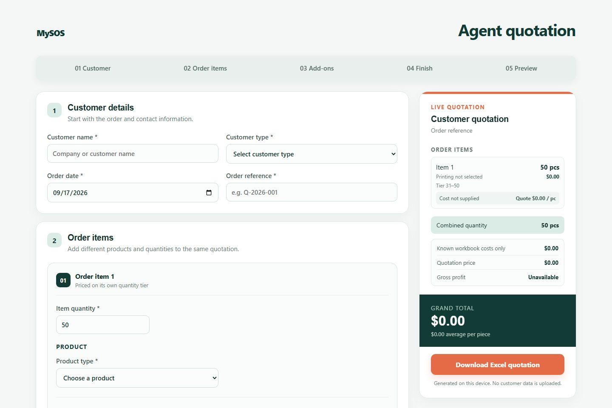

03 / 04
Commerce · Web · Sales tooling
MySOS
One source of truth for a merchandise supplier’s website and its sales quotes.
moroha29.github.io/mySOS


Agent quotation engine

Success stories

The brief
Give a custom-merchandise supplier a credible public site—and its sales agents a faster way to quote than the pricing workbook.
- 8
- quantity pricing tiers
- 4
- printing methods priced
- 0
- servers to maintain
The decisive move
We made one set of product data feed both surfaces. The public catalogue shows only “from” prices, while the agent tool runs the workbook’s exact cost, tier, and margin logic in the browser—so there is no second price list to drift out of date.
Read the build story
Challenge
Pricing lived in a spreadsheet few people could read.
Tees, polos, caps, jerseys, and cut-and-sew each price differently, with printing, add-ons, and quantity tiers layered on top. Quotes were slow, and the old website answered few questions.
Approach
Tested engines under a static site.
Pure calculation engines for products, printing, tiers, and add-ons sit beneath both surfaces. Every public route is prerendered to static HTML, with real Google reviews and client logos.
Outcome
Quotes in minutes, content the owner controls.
Agents build multi-item quotations with live cost and margin checks, then download a formatted Excel file generated on their own device. Headlines, on-page wording, and hero pictures are editable through Website Manager.